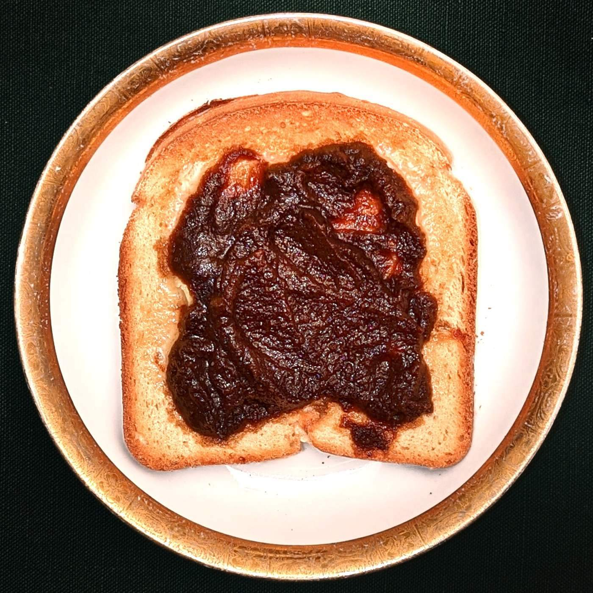
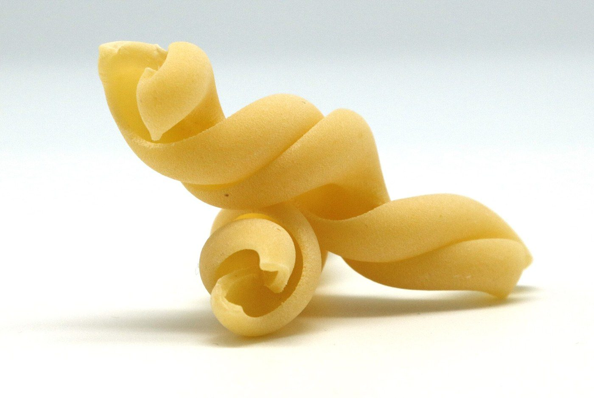
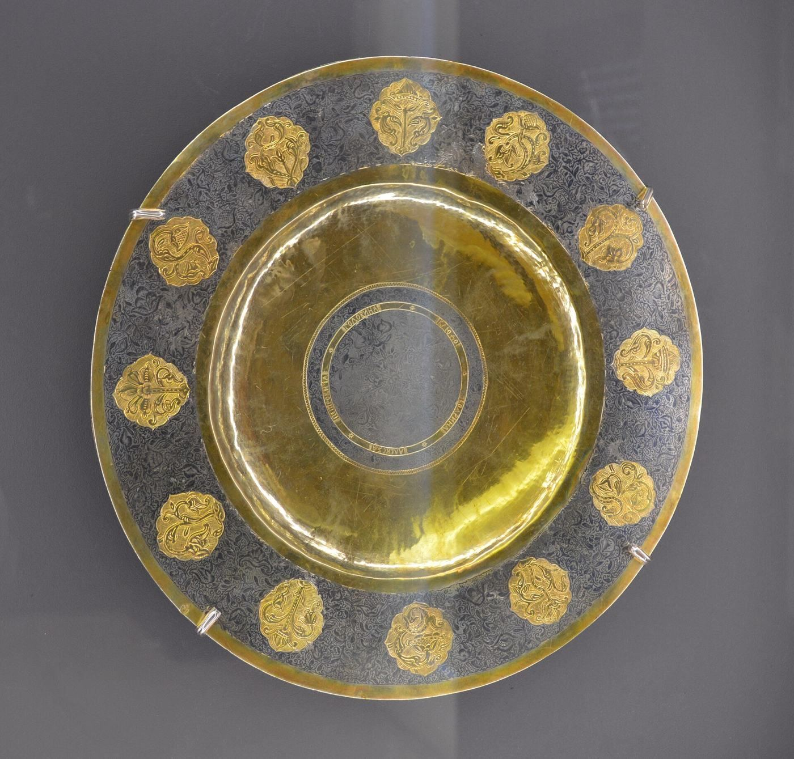

メニュー
メニュー
メニューと価格は準備中です。決まりしだいご案内します。



品書き
お品書き
| メニュー | 準備中 |
|---|---|
| 価格 | 準備中 |
| ご予約 | 準備中 |
提供内容を断定しないため、すべて準備中としています。
図の読み方
六つの部位をもうすこし
トップの配置図は制作側の連想で、お店のメニューとは関係ありません。各部位を図のどこに描いたかをまとめています。
1口のギャザー
袋の口を絞ったときに、布が寄って波のように見える縁の部分。
図では上端の波形で示している。
2ひも通し
口の縁を折り返して縫い、ひもを通してある筒状の帯の部分。
図では口のすぐ下の横帯で、二本の縫い目を描いた。
3ひも
口を絞ったり開いたりするための、細い帯状のもの。
図では左右二本が口の外へ出て、先が垂れている。
4ストッパー
ひもが勝手に動かないように留める、小さな留め具。
図ではひも二本をまとめる小さな角丸の部品にした。
5胴
袋の本体にあたる、布が大きく広がる面。
図では中央のもっとも広い面で、縫い目を一本入れた。
6底
胴の下端で、縫い目で閉じてあって丸みをもつ部分。
図では最下部の丸みと、その上の縫い目で示した。
写真(イメージ)
写真(イメージ)




写真はイメージです。お店のものではありません。